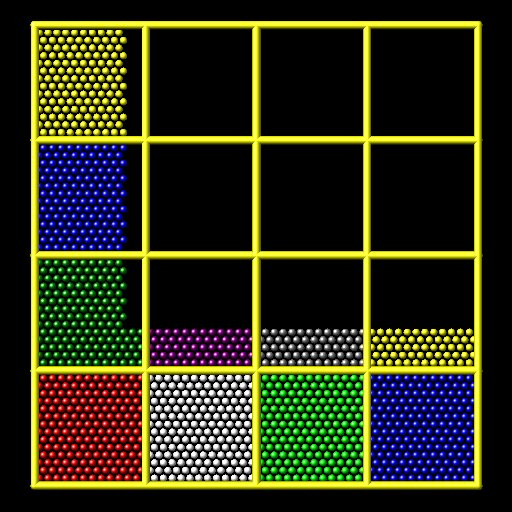
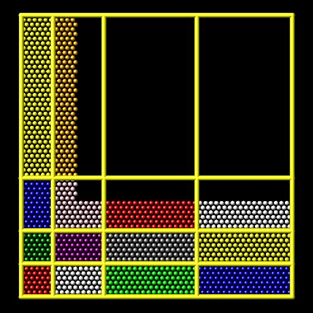
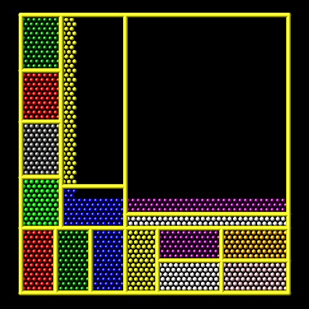

\(\renewcommand{\AA}{\text{Å}}\)
balance command
Syntax
balance thresh style args ... keyword args ...
thresh = imbalance threshold that must be exceeded to perform a re-balance
one style/arg pair can be used (or multiple for x,y,z)
style = x or y or z or shift or rcb
x args = uniform or Px-1 numbers between 0 and 1 uniform = evenly spaced cuts between processors in x dimension numbers = Px-1 ascending values between 0 and 1, Px - # of processors in x dimension x can be specified together with y or z y args = uniform or Py-1 numbers between 0 and 1 uniform = evenly spaced cuts between processors in y dimension numbers = Py-1 ascending values between 0 and 1, Py - # of processors in y dimension y can be specified together with x or z z args = uniform or Pz-1 numbers between 0 and 1 uniform = evenly spaced cuts between processors in z dimension numbers = Pz-1 ascending values between 0 and 1, Pz - # of processors in z dimension z can be specified together with x or y shift args = dimstr Niter stopthresh dimstr = sequence of letters containing "x" or "y" or "z", each not more than once Niter = # of times to iterate within each dimension of dimstr sequence stopthresh = stop balancing when this imbalance threshold is reached rcb args = none
zero or more keyword/arg pairs may be appended
keyword = weight or out
weight style args = use weighted particle counts for the balancing style = group or neigh or time or var or store group args = Ngroup group1 weight1 group2 weight2 ... Ngroup = number of groups with assigned weights group1, group2, ... = group IDs weight1, weight2, ... = corresponding weight factors neigh factor = compute weight based on number of neighbors factor = scaling factor (> 0) time factor = compute weight based on time spend computing factor = scaling factor (> 0) var name = take weight from atom-style variable name = name of the atom-style variable store name = store weight in custom atom property defined by fix property/atom command name = atom property name (without d_ prefix) sort arg = no or yes out arg = filename filename = write each processor's subdomain to a file
Examples
balance 0.9 x uniform y 0.4 0.5 0.6
balance 1.2 shift xz 5 1.1
balance 1.0 shift xz 5 1.1
balance 1.1 rcb
balance 1.0 shift x 10 1.1 weight group 2 fast 0.5 slow 2.0
balance 1.0 shift x 10 1.1 weight time 0.8 weight neigh 0.5 weight store balance
balance 1.0 shift x 20 1.0 out tmp.balance
Description
This command adjusts the size and shape of processor subdomains within the simulation box, to attempt to balance the number of atoms or particles and thus indirectly the computational cost (load) more evenly across processors. The load balancing is “static” in the sense that this command performs the balancing once, before or between simulations. The processor subdomains will then remain static during the subsequent run. To perform “dynamic” balancing, see the fix balance command, which can adjust processor subdomain sizes and shapes on-the-fly during a run.
Load-balancing is typically most useful if the particles in the simulation box have a spatially-varying density distribution or when the computational cost varies significantly between different particles. E.g. a model of a vapor/liquid interface, or a solid with an irregular-shaped geometry containing void regions, or hybrid pair style simulations which combine pair styles with different computational cost. In these cases, the LAMMPS default of dividing the simulation box volume into a regular-spaced grid of 3d bricks, with one equal-volume subdomain per processor, may assign numbers of particles per processor in a way that the computational effort varies significantly. This can lead to poor performance when the simulation is run in parallel.
The balancing can be performed with or without per-particle weighting. With no weighting, the balancing attempts to assign an equal number of particles to each processor. With weighting, the balancing attempts to assign an equal aggregate computational weight to each processor, which typically induces a different number of atoms assigned to each processor. Details on the various weighting options and examples for how they can be used are given below.
Note that the processors command allows some control over how the box volume is split across processors. Specifically, for a Px by Py by Pz grid of processors, it allows choice of Px, Py, and Pz, subject to the constraint that Px * Py * Pz = P, the total number of processors. This is sufficient to achieve good load-balance for some problems on some processor counts. However, all the processor subdomains will still have the same shape and same volume.
The requested load-balancing operation is only performed if the current “imbalance factor” in particles owned by each processor exceeds the specified thresh parameter. The imbalance factor is defined as the maximum number of particles (or weight) owned by any processor, divided by the average number of particles (or weight) per processor. Thus an imbalance factor of 1.0 is perfect balance.
As an example, for 10000 particles running on 10 processors, if the most heavily loaded processor has 1200 particles, then the factor is 1.2, meaning there is a 20% imbalance. Note that a re-balance can be forced even if the current balance is perfect (1.0) be specifying a thresh < 1.0.
Note
Balancing is performed even if the imbalance factor does not exceed the thresh parameter if a “grid” style is specified when the current partitioning is “tiled”. The meaning of “grid” vs “tiled” is explained below. This is to allow forcing of the partitioning to “grid” so that the comm_style brick command can then be used to replace a current comm_style tiled setting.
When the balance command completes, it prints statistics about the result, including the change in the imbalance factor and the change in the maximum number of particles on any processor. For “grid” methods (defined below) that create a logical 3d grid of processors, the positions of all cutting planes in each of the 3 dimensions (as fractions of the box length) are also printed.
Note
This command attempts to minimize the imbalance factor, as defined above. But depending on the method a perfect balance (1.0) may not be achieved. For example, “grid” methods (defined below) that create a logical 3d grid cannot achieve perfect balance for many irregular distributions of particles. Likewise, if a portion of the system is a perfect lattice, e.g. the initial system is generated by the create_atoms command, then “grid” methods may be unable to achieve exact balance. This is because entire lattice planes will be owned or not owned by a single processor.
Note
The imbalance factor is also an estimate of the maximum speed-up you can hope to achieve by running a perfectly balanced simulation versus an imbalanced one. In the example above, the 10000 particle simulation could run up to 20% faster if it were perfectly balanced, versus when imbalanced. However, computational cost is not strictly proportional to particle count, and changing the relative size and shape of processor subdomains may lead to additional computational and communication overheads, e.g. in the PPPM solver used via the kspace_style command. Thus you should benchmark the run times of a simulation before and after balancing.
The method used to perform a load balance is specified by one of the listed styles (or more in the case of x,y,z), which are described in detail below. There are 2 kinds of styles.
The x, y, z, and shift styles are “grid” methods which produce a logical 3d grid of processors. They operate by changing the cutting planes (or lines) between processors in 3d (or 2d), to adjust the volume (area in 2d) assigned to each processor, as in the following 2d diagram where processor subdomains are shown and particles are colored by the processor that owns them.
  
{kind=link}
{kind=link}
{kind=link}
The leftmost diagram is the default partitioning of the simulation box across processors (one sub-box for each of 16 processors); the middle diagram is after a “grid” method has been applied. The rcb style is a “tiling” method which does not produce a logical 3d grid of processors. Rather it tiles the simulation domain with rectangular sub-boxes of varying size and shape in an irregular fashion so as to have equal numbers of particles (or weight) in each sub-box, as in the rightmost diagram above.
The “grid” methods can be used with either of the comm_style command options, brick or tiled. The “tiling” methods can only be used with comm_style tiled. Note that it can be useful to use a “grid” method with comm_style tiled to return the domain partitioning to a logical 3d grid of processors so that “comm_style brick” can afterwords be specified for subsequent run commands.
When a “grid” method is specified, the current domain partitioning can be either a logical 3d grid or a tiled partitioning. In the former case, the current logical 3d grid is used as a starting point and changes are made to improve the imbalance factor. In the latter case, the tiled partitioning is discarded and a logical 3d grid is created with uniform spacing in all dimensions. This becomes the starting point for the balancing operation.
When a “tiling” method is specified, the current domain partitioning (“grid” or “tiled”) is ignored, and a new partitioning is computed from scratch.
The x, y, and z styles invoke a “grid” method for balancing, as described above. Note that any or all of these 3 styles can be specified together, one after the other, but they cannot be used with any other style. This style adjusts the position of cutting planes between processor subdomains in specific dimensions. Only the specified dimensions are altered.
The uniform argument spaces the planes evenly, as in the left diagrams above. The numeric argument requires listing Ps-1 numbers that specify the position of the cutting planes. This requires knowing Ps = Px or Py or Pz = the number of processors assigned by LAMMPS to the relevant dimension. This assignment is made (and the Px, Py, Pz values printed out) when the simulation box is created by the “create_box” or “read_data” or “read_restart” command and is influenced by the settings of the processors command.
Each of the numeric values must be between 0 and 1, and they must be listed in ascending order. They represent the fractional position of the cutting place. The left (or lower) edge of the box is 0.0, and the right (or upper) edge is 1.0. Neither of these values is specified. Only the interior Ps-1 positions are specified. Thus is there are 2 processors in the x dimension, you specify a single value such as 0.75, which would make the left processor’s subdomain 3x larger than the right processor’s subdomain.
The shift style invokes a “grid” method for balancing, as described above. It changes the positions of cutting planes between processors in an iterative fashion, seeking to reduce the imbalance factor, similar to how the fix balance shift command operates.
The dimstr argument is a string of characters, each of which must be an “x” or “y” or “z”. Each character can appear zero or one time, since there is no advantage to balancing on a dimension more than once. You should normally only list dimensions where you expect there to be a density variation in the particles.
Balancing proceeds by adjusting the cutting planes in each of the dimensions listed in dimstr, one dimension at a time. For a single dimension, the balancing operation (described below) is iterated on up to Niter times. After each dimension finishes, the imbalance factor is re-computed, and the balancing operation halts if the stopthresh criterion is met.
A re-balance operation in a single dimension is performed using a recursive multisectioning algorithm, where the position of each cutting plane (line in 2d) in the dimension is adjusted independently. This is similar to a recursive bisectioning for a single value, except that the bounds used for each bisectioning take advantage of information from neighboring cuts if possible. At each iteration, the count of particles on either side of each plane is tallied. If the counts do not match the target value for the plane, the position of the cut is adjusted to be halfway between a low and high bound. The low and high bounds are adjusted on each iteration, using new count information, so that they become closer together over time. Thus as the recursion progresses, the count of particles on either side of the plane gets closer to the target value.
After the balanced plane positions are determined, if any pair of adjacent planes are closer together than the neighbor skin distance (as specified by the neigh_modify command), then the plane positions are shifted to separate them by at least this amount. This is to prevent particles being lost when dynamics are run with processor subdomains that are too narrow in one or more dimensions.
Once the re-balancing is complete and final processor subdomains assigned, particles are migrated to their new owning processor, and the balance procedure ends.
Note
At each re-balance operation, the bisectioning for each cutting plane (line in 2d) typically starts with low and high bounds separated by the extent of a processor’s subdomain in one dimension. The size of this bracketing region shrinks by 1/2 every iteration. Thus if Niter is specified as 10, the cutting plane will typically be positioned to 1 part in 1000 accuracy (relative to the perfect target position). For Niter = 20, it will be accurate to 1 part in a million. Thus there is no need to set Niter to a large value. LAMMPS will check if the threshold accuracy is reached (in a dimension) is less iterations than Niter and exit early. However, Niter should also not be set too small, since it will take roughly the same number of iterations to converge even if the cutting plane is initially close to the target value.
The rcb style invokes a “tiled” method for balancing, as described above. It performs a recursive coordinate bisectioning (RCB) of the simulation domain. The basic idea is as follows.
The simulation domain is cut into 2 boxes by an axis-aligned cut in one of the dimensions, leaving one new sub-box on either side of the cut. Which dimension is chosen for the cut depends on the particle (weight) distribution within the parent box. Normally the longest dimension of the box is cut, but if all (or most) of the particles are at one end of the box, a cut may be performed in another dimension to induce sub-boxes that are more cube-ish (3d) or square-ish (2d) in shape.
After the cut is made, all the processors are also partitioned into 2 groups, half assigned to the box on the lower side of the cut, and half to the box on the upper side. (If the processor count is odd, one side gets an extra processor.) The cut is positioned so that the number of (weighted) particles in the lower box is exactly the number that the processors assigned to that box should own for load balance to be perfect. This also makes load balance for the upper box perfect. The positioning of the cut is done iteratively, by a bisectioning method (median search). Note that counting particles on either side of the cut requires communication between all processors at each iteration.
That is the procedure for the first cut. Subsequent cuts are made recursively, in exactly the same manner. The subset of processors assigned to each box make a new cut in one dimension of that box, splitting the box, the subset of processors, and the particles in the box in two. The recursion continues until every processor is assigned a sub-box of the entire simulation domain, and owns the (weighted) particles in that sub-box.
This subsection describes how to perform weighted load balancing using the weight keyword.
By default, all particles have a weight of 1.0, which means each particle is assumed to require the same amount of computation during a timestep. There are, however, scenarios where this is not a good assumption. Measuring the computational cost for each particle accurately would be impractical and slow down the computation. Instead the weight keyword implements several ways to influence the per-particle weights empirically by properties readily available or using the user’s knowledge of the system. Note that the absolute value of the weights are not important; only their relative ratios affect which particle is assigned to which processor. A particle with a weight of 2.5 is assumed to require 5x more computational than a particle with a weight of 0.5. For all the options below the weight assigned to a particle must be a positive value; an error will be be generated if a weight is <= 0.0.
Below is a list of possible weight options with a short description of their usage and some example scenarios where they might be applicable. It is possible to apply multiple weight flags and the weightings they induce will be combined through multiplication. Most of the time, however, it is sufficient to use just one method.
The group weight style assigns weight factors to specified groups of particles. The group style keyword is followed by the number of groups, then pairs of group IDs and the corresponding weight factor. If a particle belongs to none of the specified groups, its weight is not changed. If it belongs to multiple groups, its weight is the product of the weight factors.
This weight style is useful in combination with pair style hybrid, e.g. when combining a more costly many-body potential with a fast pairwise potential. It is also useful when using run_style respa where some portions of the system have many bonded interactions and others none. It assumes that the computational cost for each group remains constant over time. This is a purely empirical weighting, so a series test runs to tune the assigned weight factors for optimal performance is recommended.
The neigh weight style assigns the same weight to each particle owned by a processor based on the total count of neighbors in the neighbor list owned by that processor. The motivation is that more neighbors means a higher computational cost. The style does not use neighbors per atom to assign a unique weight to each atom, because that value can vary depending on how the neighbor list is built.
The factor setting is applied as an overall scale factor to the neigh weights which allows adjustment of their impact on the balancing operation. The specified factor value must be positive. A value > 1.0 will increase the weights so that the ratio of max weight to min weight increases by factor. A value < 1.0 will decrease the weights so that the ratio of max weight to min weight decreases by factor. In both cases the intermediate weight values increase/decrease proportionally as well. A value = 1.0 has no effect on the neigh weights. As a rule of thumb, we have found a factor of about 0.8 often results in the best performance, since the number of neighbors is likely to overestimate the ideal weight.
This weight style is useful for systems where there are different cutoffs used for different pairs of interactions, or the density fluctuates, or a large number of particles are in the vicinity of a wall, or a combination of these effects. If a simulation uses multiple neighbor lists, this weight style will use the first suitable neighbor list it finds. It will not request or compute a new list. A warning will be issued if there is no suitable neighbor list available or if it is not current, e.g. if the balance command is used before a run or minimize command is used, in which case the neighbor list may not yet have been built. In this case no weights are computed. Inserting a run 0 post no command before issuing the balance command, may be a workaround for this case, as it will induce the neighbor list to be built.
The time weight style uses timer data to estimate weights. It assigns the same weight to each particle owned by a processor based on the total computational time spent by that processor. See details below on what time window is used. It uses the same timing information as is used for the MPI task timing breakdown, namely, for sections Pair, Bond, Kspace, and Neigh. The time spent in those portions of the timestep are measured for each MPI rank, summed, then divided by the number of particles owned by that processor. I.e. the weight is an effective CPU time/particle averaged over the particles on that processor.
The factor setting is applied as an overall scale factor to the time weights which allows adjustment of their impact on the balancing operation. The specified factor value must be positive. A value > 1.0 will increase the weights so that the ratio of max weight to min weight increases by factor. A value < 1.0 will decrease the weights so that the ratio of max weight to min weight decreases by factor. In both cases the intermediate weight values increase/decrease proportionally as well. A value = 1.0 has no effect on the time weights. As a rule of thumb, effective values to use are typically between 0.5 and 1.2. Note that the timer quantities mentioned above can be affected by communication which occurs in the middle of the operations, e.g. pair styles with intermediate exchange of data witin the force computation, and likewise for KSpace solves.
When using the time weight style with the balance command, the timing data is taken from the preceding run command, i.e. the timings are for the entire previous run. For the fix balance command the timing data is for only the timesteps since the last balancing operation was performed. If timing information for the required sections is not available, e.g. at the beginning of a run, or when the timer command is set to either loop or off, a warning is issued. In this case no weights are computed.
Note
The time weight style is the most generic option, and should be tried first, unless the group style is easily applicable. However, since the computed cost function is averaged over all particles on a processor, the weights may not be highly accurate. This style can also be effective as a secondary weight in combination with either group or neigh to offset some of inaccuracies in either of those heuristics.
The var weight style assigns per-particle weights by evaluating an atom-style variable specified by name. This is provided as a more flexible alternative to the group weight style, allowing definition of a more complex heuristics based on information (global and per atom) available inside of LAMMPS. For example, atom-style variables can reference the position of a particle, its velocity, the volume of its Voronoi cell, etc.
The store weight style does not compute a weight factor. Instead it stores the current accumulated weights in a custom per-atom vector specified by name. This must be a vector defined as d_name via the fix property/atom command. This means the values in the vector can be read as part of a data file with the read_data command or specified with the set command. These weights can also be output in a dump file, so this is a way to examine, debug, or visualize the per-particle weights used during the load-balancing operation.
Note that the name of the custom per-atom vector is specified just as name, not as d_name as it is for other commands that use different kinds of custom atom vectors or arrays as arguments.
The sort keyword determines whether the communication of per-atom data to other processors during load-balancing will be random or deterministic. Random is generally faster; deterministic will ensure the new ordering of atoms on each processor is the same each time the same simulation is run. This can be useful for debugging purposes. Since the balance command is a one-time operation, the default is yes to perform sorting.
The out keyword writes a text file to the specified filename with the results of the balancing operation. The file contains the bounds of the subdomain for each processor after the balancing operation completes. The format of the file is compatible with the Pizza.py mdump tool which has support for manipulating and visualizing mesh files. An example is shown here for a balancing by 4 processors for a 2d problem:
ITEM: TIMESTEP
0
ITEM: NUMBER OF NODES
16
ITEM: BOX BOUNDS
0 10
0 10
0 10
ITEM: NODES
1 1 0 0 0
2 1 5 0 0
3 1 5 5 0
4 1 0 5 0
5 1 5 0 0
6 1 10 0 0
7 1 10 5 0
8 1 5 5 0
9 1 0 5 0
10 1 5 5 0
11 1 5 10 0
12 1 10 5 0
13 1 5 5 0
14 1 10 5 0
15 1 10 10 0
16 1 5 10 0
ITEM: TIMESTEP
0
ITEM: NUMBER OF SQUARES
4
ITEM: SQUARES
1 1 1 2 3 4
2 1 5 6 7 8
3 1 9 10 11 12
4 1 13 14 15 16
The coordinates of all the vertices are listed in the NODES section, 5 per processor. Note that the 4 subdomains share vertices, so there will be duplicate nodes in the list.
The “SQUARES” section lists the node IDs of the 4 vertices in a rectangle for each processor (1 to 4).
For a 3d problem, the syntax is similar with 8 vertices listed for each processor, instead of 4, and “SQUARES” replaced by “CUBES”.
Restrictions
For 2d simulations, the z style cannot be used. Nor can a “z” appear in dimstr for the shift style.
Balancing through recursive bisectioning (rcb style) requires comm_style tiled
Default
The default setting is sort = yes.